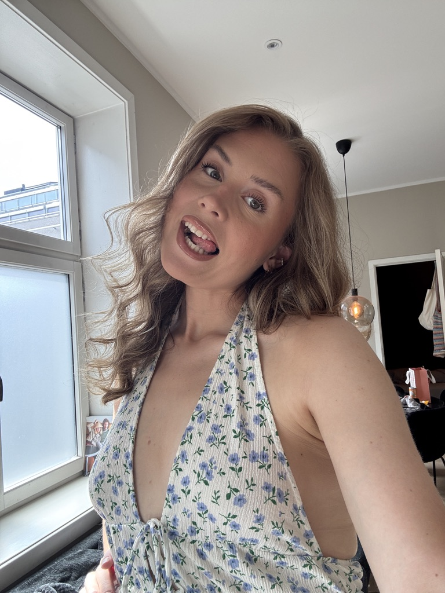

Laura Bakke Andresen
Welcome to my little introduction <3

ABOUT ME
Hi! My name is Laura, I'm a 25-year old living in Oslo. I'm from a small town near the Swedish border. When I got tired of the woods and shopping in Sweden, I had to try living in the big city. I've now lived here for 5 years and I LOVE IT! I try to bring a creative spirit into my life by being very curious and open to new ideas. In my free time I enjoy creating things, like knitting, drawing, painting and DIY projects. Making an idea come to life is a passion of mine <3
WORK AND EDUCATION
From my previous studies, I have a bachelor's degree in Project Management for the Arts and Creative industries. After my studies, I've worked a little bit as a freelance graphic designer and voulunteered at a theatre here in Oslo. To make the world go round, I mainly work as a mail carrier. I chose to study Programming and UX/UI Design because I like making things and wanted to learn new ways to bring my ideas to life.
PERSONALITY TRAITS
- Ambitious
- Open-minded
- Independent
- Curious
- Social
MY FUN FACT
I can make a clover with my tongue🍀